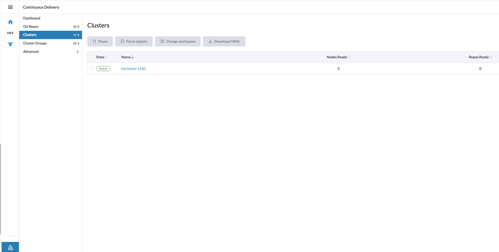
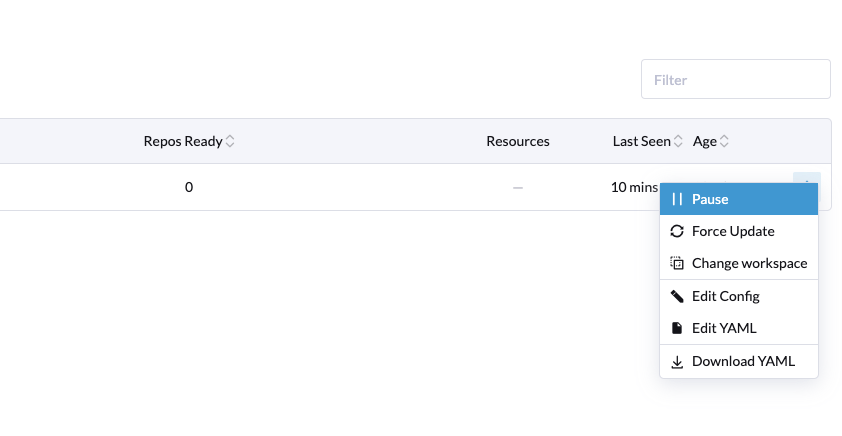
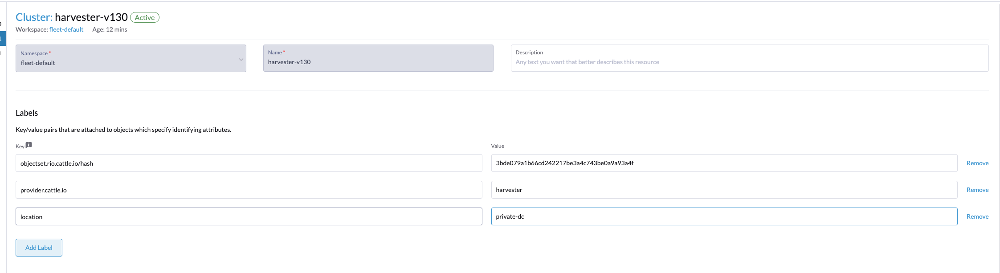
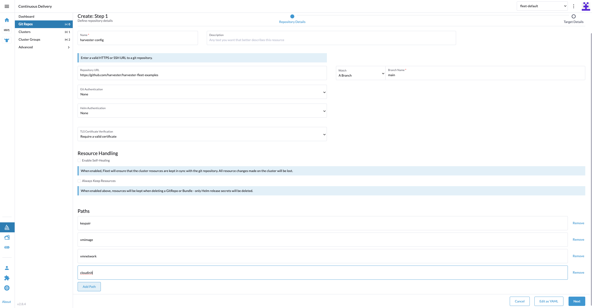
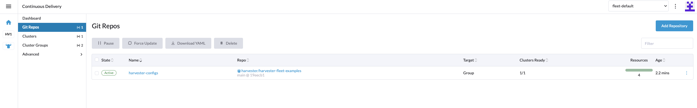

Rancher Integration
Rancher is an open-source multi-cluster management platform. Starting with Rancher v2.6.1, Rancher has integrated Harvester by default to centrally manage VMs and containers.
Users can import and manage multiple Harvester clusters using the Rancher Virtualization Management feature. Leveraging the Rancher’s authentication feature and RBAC control for multi-tenancy support.
For a comprehensive overview of the support matrix, please refer to the Harvester & Rancher Support Matrix.
For the network requirements, please refer to the doc here.

Deploying Rancher server
To use Rancher with Harvester, please install Rancher on a separate server. If you want to try out the integration features, you can create a VM in Harvester and install the Rancher server by following the Helm CLI quick start.
For production setup, please use one of the following guides to deploy and provision Rancher and a Kubernetes cluster with the provider of your choice:
-
AWS (uses Terraform)
-
AWS Marketplace (uses Amazon EKS)
-
Azure (uses Terraform)
-
DigitalOcean (uses Terraform)
-
GCP (uses Terraform)
-
Hetzner Cloud (uses Terraform)
-
Outscale (uses Terraform)
If you prefer, the following guide will take you through the same process in individual steps. Use this if you want to run Rancher with a different provider, on prem, or if you want to see how easy it is.
|
Do not install Rancher with Docker in production. Otherwise, your environment may be damaged, and your cluster may not be able to be recovered. Installing Rancher in Docker should only be used for quick evaluation and testing purposes. |
Virtualization management
With Rancher’s virtualization management feature, you can import and manage your Harvester cluster. By clicking one of the imported clusters, you can easily access and manage a range of Harvester cluster resources, including hosts, VMs, images, volumes, and more. Additionally, the virtualization management feature leverages Rancher’s existing capabilities, such as authentication with various auth providers and multi-tenancy support.
For in-depth insights, please refer to the virtualization management page.

Creating Kubernetes clusters using the Harvester node driver
You can launch a Kubernetes cluster from Rancher using the Harvester node driver. When Rancher deploys Kubernetes onto these nodes, you can choose between Rancher Kubernetes Engine (RKE) or RKE2 distributions.
One benefit of installing Kubernetes on node pools hosted by the node driver is that if a node loses connectivity with the cluster, Rancher can automatically create another node to join the cluster to ensure that the count of the node pool is as expected.
Starting from Rancher version v2.6.1, the Harvester node driver is included by default. You can refer to the node-driver page for more details.

Harvester baremetal container workload support (experimental)
Starting with Rancher v2.7.6, Harvester introduces a new feature that enables you to deploy and manage container workloads directly to the underlying Harvester cluster. With this feature, you can seamlessly combine the power of virtual machines with the flexibility of containerization, allowing for a more versatile and efficient infrastructure setup.
This guide will walk you through enabling and using this experimental feature, highlighting its capabilities and best practices.
To enable this new feature flag, follow these steps:
-
Click the hamburger menu and choose the Global Settings tab.
-
Click Feature Flags and locate the new feature flag
harvester-baremetal-container-workload. -
Click the drop-down menu and select Activate to enable this feature.
-
If the feature state changes to Active, the feature is successfully enabled.
Key Features
Unified Dashboard View: Once you’ve enabled the feature, you can explore the dashboard view of the Harvester cluster, just like you would with other standard Kubernetes clusters. This unified experience simplifies the management and monitoring of both your virtual machines and container workloads from a single, user-friendly interface.
Deploy Custom Workloads: This feature lets you deploy custom container workloads directly to the bare-metal Harvester cluster. While this functionality is experimental, it introduces exciting possibilities for optimizing your infrastructure. However, we recommend deploying container and VM workloads in separate namespaces to ensure clarity and separation.
|
|
With this feature enabled, your Harvester cluster does not appear on the Continuous Delivery page in the Rancher UI. Please check the issue #4482 for further updates. |
Fleet Support (Experimental)
Starting with Rancher v2.7.9, you can leverage Fleet for managing container workloads and configuring Harvester with a GitOps-based approach.
|
The Rancher feature |
-
On the Rancher UI, go to ☰ > Continuous Delivery.
 -
(Optional) On the Clusters tab, edit the Fleet cluster config to add labels that can be used to group Harvester clusters.
In this example, the label
location=private-dcwas added. -
(Optional) On the Cluster Groups tab, create a cluster group.
In this example, the cluster group
private-dc-clustersis created with a cluster selector rule that matches the label key/value pair oflocation=private-dc.
-
On the Git Repos tab, create a Git repo named
harvester-configthat points to the harvester-fleet-examples repo, with the branch defined asmain. You must define the following paths:-
keypair -
vmimage -
vmnetwork -
cloudinit
-
-
Click Next, and then define the Git repo targets. You can select all clusters, an individual cluster, or a group of clusters.
In this example, the cluster group named
private-dc-clustersis used.
-
Click Save. It may take a few seconds for the resources to be rolled out to the target clusters.
